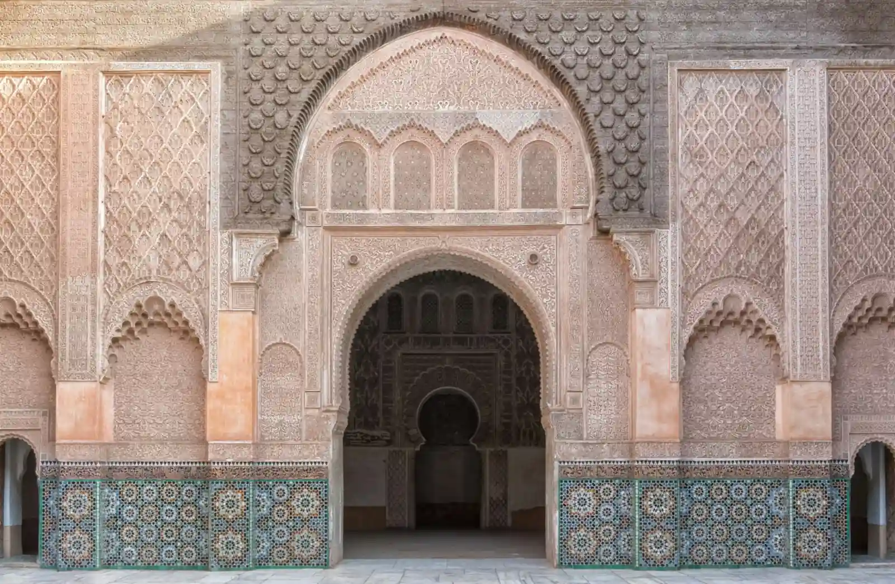

Help us tell this story
If you were part of the masjid’s early years and have photos, documents or memories to share, we would love to hear from you.
admin@virginmarymosque.org.au →
A masjid raised by its community — serving Hoppers Crossing and Melbourne’s west since 2006.
Photo: Milad Alizadeh / Unsplash
Since 2006
A place of daily prayer, learning and community life in the City of Wyndham.
The Virgin Mary Mosque (Masjid Maryam) was established in 2006 to serve the Muslim community of Melbourne’s west.
Today the masjid stands at 143 Hogans Rd, Hoppers Crossing, in the City of Wyndham — a place of daily prayer, learning, and community life.
Each week the masjid hosts the five daily prayers and Jumu’ah — three congregations every Friday at 12:15 PM, 1:15 PM and 2:15 PM, with khutbahs in Arabic and English — alongside a dedicated women’s prayer section and ongoing community programs.
Our name
Our masjid is named for Maryam (peace be upon her) — the only woman named in the Qur’an, honoured by Allah in Surah Maryam and Surah Al-Imran. The story behind the name, and what it asks of us as a congregation, has a page of its own.
If you were part of the masjid’s early years and have photos, documents or memories to share, we would love to hear from you.
admin@virginmarymosque.org.au →The next chapter
Every prayer, class and program at Masjid Maryam is sustained by its community. Be part of what comes next.